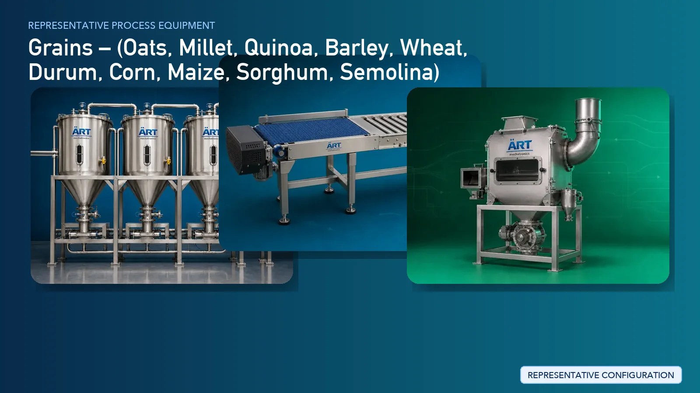

Grain Cleaning, Grading & Packing Plant & Machinery Solutions
Grain processing units play a critical role in the agricultural supply chain by procuring raw grains directly from farms and converting them into clean, graded, and market-ready products.

About Grains processing
ART Mechatronics provides complete turnkey solutions for grain cleaning, grading, and packaging plants, offering advanced systems for impurity removal, size grading, polishing, and bulk packaging. Our solutions are designed for high throughput, minimal grain loss, and export-quality processing.
Complete Grain Process Flow
Grains are received directly from farms and unloaded into the processing system.
Ensures smooth intake and flow.
Initial cleaning removes large impurities such as straw, dust, and husk.
Ensures removal of coarse impurities.
Grains are further cleaned to remove stones, sand, and finer impurities.
Ensures:
- High purity
- Safe downstream processing
Grains are sorted based on size, weight, and quality.
Produces:
- Premium grade
- Standard grade
- Rejection / lower grade
Directly impacts market pricing.
Certain grains require husk removal. Applicable for:
Machines Used:
- Dehusker / Dehuller
Grains may be polished to enhance appearance and quality.
Ensures:
- Better visual appeal
- Premium finish
Grains are dried to achieve safe storage moisture levels.
Ensures:
- Longer shelf life
- Reduced spoilage
Dust generated during cleaning and grading is controlled. Systems Used:
Ensures:
- Clean plant environment
- Worker safety
Final inspection ensures consistency and quality.
Processed grains are packed into bags or retail packs.
Suitable for:
- Bulk supply
- Retail distribution
Grains Processed
- Oats Processing
- Millet Processing
- Quinoa Processing
- Barley Processing
- Wheat Processing
- Durum Processing
- Corn / Maize Processing
- Sorghum Processing
- Semolina-grade grain handling
Machinery Required for Grain Cleaning & Packing Plant
- Intake Hopper
- Material Handling Systems
- Pre Cleaner
- Destoner
- Air Classifier
- Magnetic Separator
- Grading Machine
- Dehusker / Dehuller
- Grain Polisher
- Dryer
- Dust Collection System
- Inspection System
- Packaging Machines
Turnkey Grain Processing Solutions
ART Mechatronics offers complete turnkey solutions for grain cleaning and packing plants, including:
- Process design & plant layout
- Cleaning and grading systems
- Dehusking and polishing systems
- Drying and moisture control systems
- Dust control & air handling systems
- Automation & control panels
- Packaging line integration
- Installation & commissioning
- After-sales support
We customize solutions based on:
- Grain type
- Production capacity
- Processing requirements
- Packaging format
Why Choose Art Mechatronics
- Expertise in post-harvest grain processing systems
- High-capacity cleaning and grading solutions
- Minimal grain loss handling
- Advanced dust control systems
- Energy-efficient plant design
- Global export capability
Machinery in a Grains plant
Where it's used
Get pricing & specs for the Grains plant
Share the product, target capacity, current process and plant location. These details help our engineers discuss the right machine or line configuration.
One partner, from design to start-up
ART Mechatronics designs, manufactures, installs and commissions your Grains solution with regional presence in India, UAE and Thailand.